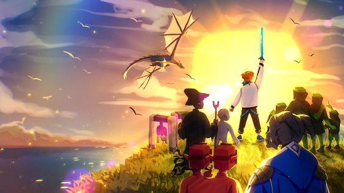

Этот сайт посвящен сезонам Lololoshka

Том 1- Начало истории
1-10 серии
Лололошка перемещается в новый мир. Постепенно развиваясь и обустраивая свою базу, он встречает говорящего дракона Лефтариона, который просит его помочь найти своего брата - Райтариона, находящегося в нижнем мире,Вскоре Лололошка встречает Горбатика, он утверждает, что Лефтарион не тот, за кого себя выдает и ему нельзя доверятьВ нижнем мире Лололошка находит мёртвого Райтариона с запиской для брата. Узнав о его смерти, Лефтарион обвиняет в этом сильнейшего мага всех времён - Варнера, поработившего его народ. Завидев следящего за ними Горбатика, Лефтарион улетает в неизвестном направлении.
11-20 cерии
Лефтарион даёт Лололошке карту своего гнезда и рассказывает ему свою историю. Теперь дракону и Лололошке нужно найти Печать Света раньше Варнера.Лололошка призывает Африта, чтобы тот разгадал шифр в записке Райтариона, он потребовал взамен молот бездны. Добыв молот, Лололошка понял, что он его обманул и просто скрылся.
21-30 серии
К дому Лололошки приходит Гектор. Лололошка даёт ему карту, чтобы тот не заблудился. Вскоре Лололошка снова встречается с Гектором и начинает обучаться у него разным ритуалам. После долгой подготовки они призывают великих духов, во время битвы с которыми Гектор погибает, а последний дух помогает с расшифровкой записки и говорит, что в неё нужно ударить молнией. Лололошка последовал указаниям духа, оказалось, что в записке был двойной шифр. Он отдаёт её Лефтариону для последующей расшифровки.
31-38 серии
Горбатик снова приходит к Лололошке, сказав как сильно Варнер зол его действиям.Лефтарион наконец разгадал шифр. Оказалось, что Печать Света находится в секретном лабиринте в нижнем мире, чтобы открыть его необходима Скрижаль, расколотая по кусочкам в разных измерениях.Лололошка отправляется в измерение Луналус за первым фрагментом Скрижали и встречает цивилизацию залов. Зал-Чародей рассказал, что Райтарион создал щит для их цивилизации из фрагмента, чтобы защититься от заргов и зорпов.Лололошка побеждает Визуалента-предводителя заргов и получает фрагмент Скрижали, и отдаёт его на изучение Лефтариону. Оказалось, что на фрагменте были пылинки из другого измерения - Пылетопии. Скорее всего, следующий фрагмент находится именно там.
39-49 серии
Лололошка отправляется в Пылетопию и встречает там цивилизацию Изначальных. Изначальный-Волшебник решает ему помочь в поисках фрагмента взамен на убийство некого зверя, убивающего всех на своём пути. После пробуждения рунного меча, Изначальный и Лололошка отправляются в Имморталис - измерение откуда приходит зверь. Войдя в портал, Лололошка встретил Хранителя Подземелья. Оказалось, что Варнер назначил его хранителем десятки тысяч лет назад, а после проклял и теперь он каждую ночь превращается в зверя. Лололошка и Изначальный решают помочь Хранителю разбить проклятие.Лефтарион просит Лололошку принести ему немного камней из Гарденсии. Во время сборов Лололошка встречает и знакомится с Линдой - женой Гектора. Выяснилось, что она и её дети бежали от всплеска энергии, вызванного каким-то культистом, который уничтожил половину мира.
50-63 серии
Лололошка приходит в гости к Линде и её детям. Линда рассказывает, свою историю. Дина и Карл рассказывают Лололошке о некоем Докторе Блэке, который был ассистентом Гектора в Арнире. Лололошка отправляется в его лабораторию. Выяснилось, что Гектор использовал заклинание, запечатывающие душу в какой-либо предмет после смерти, им оказалась книга, которую Лололошка отдал Блэку, чтобы воскресить Гектора, для этого они используют фрагмент Скрижали. К Лололошке приходит Горбатик, он вёл себя очень странно. Скорее всего это был Варнер, использовавший заклинание перевоплощения. Доктор Блэк, Изначальный-Волшебник, Зал-Чародей и Лололошка объединяются, чтобы снять проклятие с Хранителя. Ритуал оказался успешным, в благодарность хранитель дал ключ от комнаты, где Райтарион спрятал еще один фрагмент Скрижали.Горбатику становится очень плохо и он остаётся у Лололошки на время.Доктор Блэк воскрешает Гектора, постепенно он начинает всё вспоминать, а после возвращается к своей семье. Доктор Блэк и Гектор помогают вылечить Горбатика, который использовал магию, высасывающую из него силы. После проведения ритуала излечения, он скрывается в неизвестном направлении.
64-66 серии
У Гектора скоро День рождения и Карл с Диной просят Лололошку помочь им с подарком, им нужен очень сильный посох о котором мечтал Гектор. Лололошке удаётся его раздобыть.
Том 2-Восход
67-70 серии
Изначальный-Волшебник решает помочь с поисками других фрагментов Скрижали, для этого он использует Окулус - древний артефакт для поиска предметов в разных измерениях. Лефтарион договаривается с неизвестными о продаже одного из фрагментов, взамен они просят большое количество разных минералов, чтобы добыть их Лефтарион просит помощи у Лололошки. Изначальный-Волшебник разузнал местонахождение следующего фрагмента, он находился в Мистериуме. Там Лололошка знакомится с Горбом-инженером по имени Акула, он рассказывает об организации Соколов, которые возможно держат у себя фрагмент. Горб отдаёт Лололошке рог Соколов взамен на айро-пушку.С помощью рога Лололошка находит базу соколов и втирается в их доверие, становясь "стажёром" у соколов. Он начинает выполнять различные задания
71-80 серии
Соколы хотят построить огромный реактор, Лололошка участвует в строительстве. После упорной работы Лололошка полноценно вступает в их ряды, становясь соколом.Акула узнаёт о том, что Лололошка стал соколом и приглашает его в отряд сопротивления - Ястребы, чтобы работать под прикрытием. Лололошка соглашается. Во время активации реактора с помощью фрагмента Скрижали, Ястребы врываются на базу Соколов и с помощью Лололошки выключают его и побеждают Соколов. Лололошка знакомится с главарём Ястребов и договаривается о возвращении фрагмента из реактора Соколов. Оказывается, что у них есть ещё один фрагмент, на который очень усердно работает неизвестный.У цивилизации Залов начинается неурожайное время, Лололошка помогает Залу-чародею в решение проблем с едой
81-90 серии
Варнер принимает облик Лололошки и обманным путём узнаёт у Лефтариона о местонахождении пятого фрагмента. По приходе настоящего Лололошки, Лефтарион понимает, что это был обман, но уже слишком поздно.Лололошке удаётся полноценно вступить в отряд Ястребов и получить доступ к секретной базе. Чтобы заполучить у них фрагмент Лололошка начинает выполнять различные задания.Лололошка вновь помогает цивилизации залов, создав и установив усилитель лунного света для ускорения роста растений. За многократную помощь он получает инопланетную сферу от Зала-Чародея.Ястребы извлекают фрагмент из реактора Соколов и отдают его Лололошке. Теперь ему и Лефтариону нужно очистить его от урана с помощью очищающего раствора, который им изготавливает Зал-Травник. После этого они восстанавливают магическую структуру с помощью трёх сирен.Горбатик снова приходит к Лололошке и говорит, что Варнер очень сильно зол на него, а также рассказывает, что Лефтарион и его брат украли Печать Света и предлагает присоединиться на сторону Варнера, но Лололошка отказывает. Горбатик уходит в слезах.Доктору Блэку поступает заказ от неизвестного заказчика о создании карманного измерения, он просит Лололошку о некоторой помощи в качестве ассистента, он соглашается
91-102 серии
В мире постепенно начинают пропадать блоки сами собой по неизвестным причинам, образуя большие кратеры на месте которых появляется странная слизь. Солнце сильно увеличиваться в размерах. Все существа заболевают и чувствуют себя плохо.Блэк и Лололошка продолжают работу над измерением для заказчика, остаются лишь небольшие изменения и дополнения.Блэк создаёт Лололошке амулет для усиления его магической ауры, но из-за него Лололошка не может прийти к Лефтариону.у Изначального-Волшебника пропадает фрагмент Скрижали. Оказалось, что его украл Изначальный-Банкир по просьбе неизвестных. Изначальный-Волшебник теперь должен решить загадку и шифр для его нахождения.У Гектора скоро День рождения, Лололошка разносит приглашения по его друзьям и знакомым. На празднике Лололошке становится плохо из-за амулета и он падает в обморок.Постепенно разгадывая всё больше загадок и шифров, проходя через множество трудностей и опасных путешествий Изначальный и Лололошка приходят в подземелье, где находились мать и отец изначального. Оказалось, что они сами устроили этот квест для сына, после они отправились праздновать всей семьёй. Лололошке вернули фрагмент.Доктор Блэк признаётся, что не был честен с Лололошкой и этот амулет был ловушкой для него, а после исчезает.Блэк раскрывает Гектору свою тайну, он работал на Варнера, но Гектор не бросил его и вместе они стали продумать план по его свержению.
103-108 серии
Лололошка занимает первое место в соревновательном сезоне Ястребов и получает четвёртый фрагмент Скрижали. Оказалось, что Лефтарион тоже работал на них и пытался получить фрагмент.У дома Лололошки неизвестным образом оказывается сирена. С помощью специального зелья, Лололошка начинает понимать её язык. Оказалось, что сирену зовут Льярона, она попала к его дому после взрыва гейзера от удара злого циклопа. Лололошка создаёт магическую карту и перемещает её домой. Лололошка помогает Льяроне и её сёстрам, убив циклопа.Лололошка возвращается к Блэку, он признаётся, что работал на Варнера, который был тем самым заказчиком. Блэк раскаялся, Лололошка прощает его и просит снять тот амулет. Для этого они используют специальный материал - наругамориум. Постепенно амулет начинает разрушаться.>
Том 3-Закат
109-118 серии
Амулет Лололошки наконец разрушился и теперь спустя долгое время он может прийти к Лефтариону. Дракон раскрывают свою тайну: он украл Печать Света вместе с братом, они сделали это чтобы помирить арнирцев. Лололошка отдал Лефтариону оставшиеся фрагменты для изучения.После изучения межпространственной слизи оказывается, что скоро обычный мир должен столкнуться с другим радиоактивным измерением Вокс.Чтобы спасти мир от Варнера, Лефтарион, Гектор и Доктор Блэк объединяются и решают выкрасть пятый фрагмент с помощью особого заклинания, превращающего Лололошку в Горбатика.В облике Горбатика Лололошка отправляется в Арнир и оставляет там специального робота для изучения территории и знакомится с девушкой Вероной, а после узнаёт код в сокровищницу и крадёт фрагмент, опасная ловушка с лавой оказалась неисправна, благодаря чему Лололошка смог сбежать. Выяснилось, что Верона работала на Варнера.
119-126 серии
Спустя долгое время Лололошка и Лефтарион создают Скрижаль, соединяя фрагменты, после создания.Лололошка находит магический лабиринт и активирует его с помощью Скрижали, спустя долгое время, он приходит в большую комнату с проекцией Райтариона, которая передаёт Лололошке Печать Света.Чтобы спастись от столкновения с измерение Вокс, Блэк и Лололошка договариваются с Ястребами и используют их реактор для активации карманного измерения с помощью Печати.В измерение приходят Лефтарион, Блэк, Гектор и его семья, Изначальный-Волшебник и его родители, Акула, Зал-Чародей и Зал-Травник, а также сам Лололошка.
127 серия (Финал)
Маги придумывают способ одолеть Варнера для этого они соединяют Печать Света и меч Лололошки, создавая Клинок Света.Все тщательно продумывают план по разгрому Варнера и телепортируются в Арнир. Гектор, Лефтарион и Блэк становятся невидимыми, Лололошка отвлекает горожан и стражу, чтобы они пробрались в замок пока Акула и Травник отключили защитные барьеры. Варнер заподозрил неладное и телепортировал всех к себе во дворец, план провалился.Варнер переносит Лололошку в своё измерение и вступает в поединок, в результате долгой и упорной битвы, Лошке удалось одержать победу с помощью Клинка Света. Варнер погиб, Арнир освободился от гнёта ужасного правителя и стал жить спокойно. Лефтарион хочет попытаться возродить управляющий Совет Арнира, Доктору Блэку возможно удастся обнаружить своих родителей.
Серия 128 (Вторая концовка)
Лололошка произносит великое пророчество и призывает Лигу Святых. Санфиш заключает Варнера в тюрьму.Дальнейшие события остаются неизвестны, возможно, они подобны тем, что происходили в первой концовке.
Все вернулись к спокойной и мирной жизни, а Лололошка после выполнения своей миссии был отправлен в другой мир сезона - "Игра Бога".